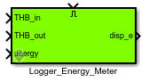
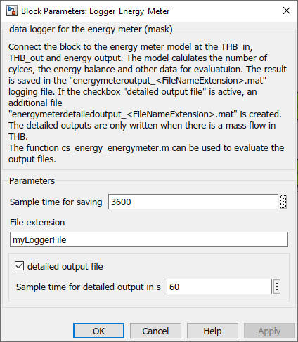

Logger_Energy_Meter
Path: Carnot/Outputs/Logger
Purpose
Creates data files which enable to evaluate the
Energy_Meter model of the Carnot blockset by using
cs_energy_energymeter
m-function.
Inputs:
- THB_in : Thermo-Hydraulic Bus at the inlet of the
Energy_Meter
- THB_out : Thermo-Hydraulic
Bus at the outlet of the Energy_Meter
-
energy : calculated thermal energy (output of the
Energy_Meter)
- Enable : "true" or "1" activates the logging of the data in the
files
Output:
- disp_e : displaying data of Energy_Meter
- files : "energymeteroutput_extension.mat" and "energymeterdetailoutput_extension.mat"where
extension is a string you can choose in the parameters of the block.
The file contains the following information in timeseries. The timeseries
appear in a structure with the variable "meter".
- meter.T_in : inlet temperature (heating) in degree Celsius
- meter.T_out : outlet temperature (heating) in degree Celsius
- meter.Mass : time integral of the mass flow on
the heating side in kg
- meter.Q : delivered thermal energy in J
- meter.Cycles : number of on/off cycles
- meter.OpTime : operation time of the boiler in s
For a full list of data point names see
2_Basic_Concepts.
Parameters and Dialog Box
The file "energymeterdetailoutput_extension.mat" is only written
if the parameter "detailed output" is activated. Detailed outputs
are written with a 60 s timestep only if there is a massflow through the meter.

Characteristics
Direct Feedthrough Yes
Sample time entered
by user in block parameters
Vectorized No